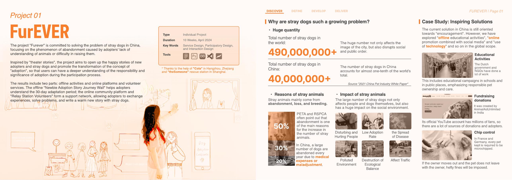
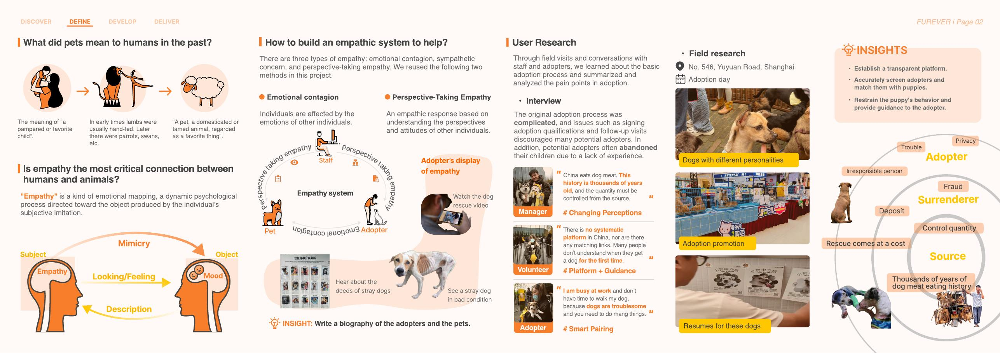
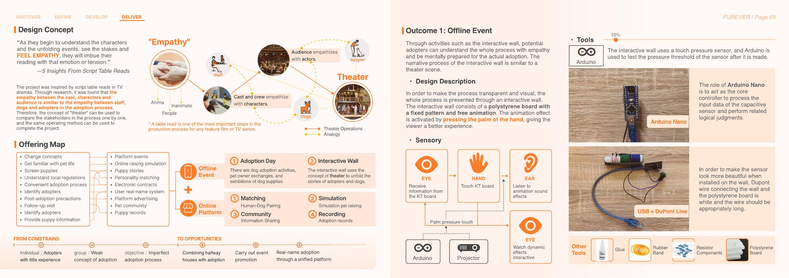
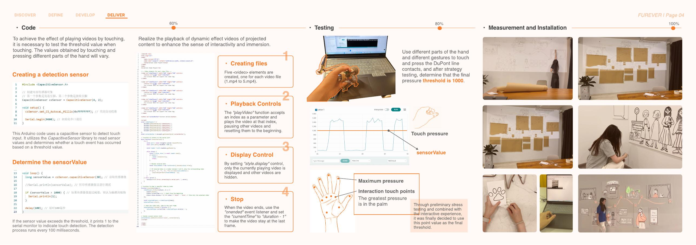
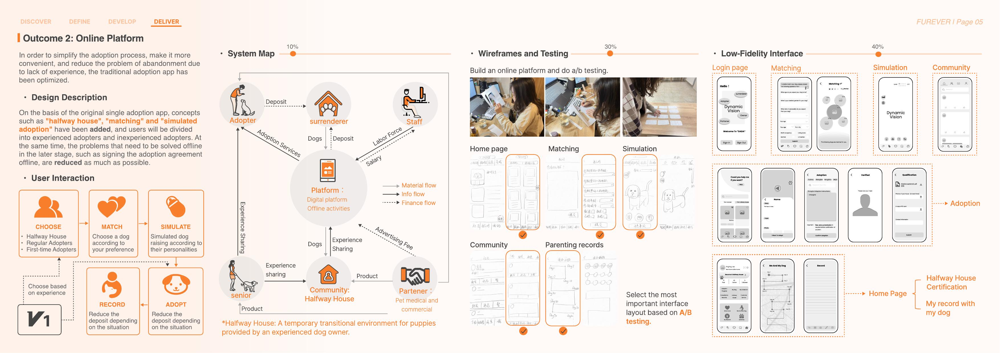
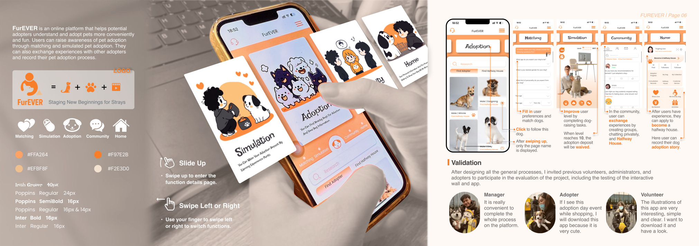

Project problem
The project focuses on abandonment caused by lack of understanding, mismatch between adopters and dogs, and a fragmented adoption experience with limited post-adoption support.
Project 01
Service Design · Participatory Design · Interaction DesignReframing stray-dog adoption as an empathic, supported journey through offline engagement and a digital service ecosystem.

Overview
This page keeps the same visual language as the home page, but expands the project into a readable case-study structure.
The project focuses on abandonment caused by lack of understanding, mismatch between adopters and dogs, and a fragmented adoption experience with limited post-adoption support.
Inspired by theatre and script table reads, the service uses story-based public engagement to let potential adopters emotionally rehearse the first 30 days of adoption before they commit.
adaptation period framed as a key emotional window
service combining offline event and online platform
adopters, volunteers, managers, and halfway houses linked in one system
Project story
The structure below is web-first rather than PDF-first, so each stage of the project can be scanned more easily.
Research in the portfolio identifies the scale of stray-dog issues, abandonment as a major source, and the need to shift from simple promotion to deeper adopter understanding. The project positions adoption not as a one-time transaction but as a supported relationship.
Field research, interviews with rescue staff, volunteers, and adopters, plus observations on adoption day, surfaced three recurring needs: a transparent platform, better guidance for first-time adopters, and smarter matching between dog personalities and adopter circumstances.
The core concept compares adoption to theatre. Staff, dogs, adopters, and public audiences become analogous to cast, characters, and viewers. This allows the service to build empathy through narrative, role transition, and staged exposure to responsibilities.
The final proposal combines an offline interactive wall for story-led education with an online platform featuring matching, simulated adoption, community exchange, and parenting records. Together they reduce uncertainty and build continuity after adoption.
Selected visuals
Click any image to enlarge it.




